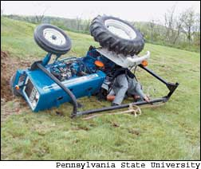
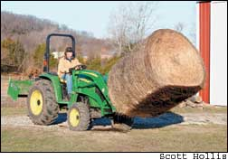
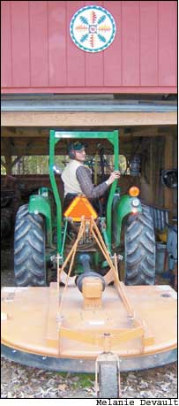
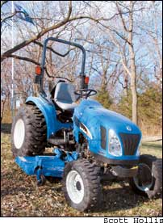

Issue # 209 - April/May 2005
My family and I live on a 20-acre Pennsylvania farm. Along the north side of our farmstead by the state highway, there are eight single-family homes. Whenever I mow along the north property line and one of the neighbors, their children, grandchildren or pets walks into the nearest yard, I immediately steer my tractor the other way.
“Don’t mean to be unsociable,” I explain later. “Just don’t want anyone to get hurt.”
The neighbors all say they appreciate my concern for their safety. But it is obvious from their expressions that they don’t quite understand what I’m talking about. After all, what could possibly be dangerous about a certified organic farmer tidying up his land with an old tractor and a brush mower on a beautiful summer afternoon?
Plenty. The blade tips on my mower move as fast as 200 mph. A rock thrown by the blades can cause severe injury or even death if it hits a bystander. But the neighbors don’t understand these risks. They weren’t sitting on my antique Ford 2N tractor when my 5-foot rotary mower struck a rock the size of a bowling ball. The rock went bouncing about 100 feet down the slope like it had been shot out of a cannon. A chunk of the same rock flew in the opposite direction, ricocheting off the tractor and hitting me in the lower back
That was nearly 20 years ago and long before I picked up most of the rocks in the east field. But I still remember that incident every time I mow behind Harold Schantz’s house. His big, sliding-glass doors are only about 30 feet from the property line, making them an easy target. That’s why I always raise the mower deck at least a few inches whenever I mow there. If the grass is especially tall, I walk through it first just to make sure there are no rocks, glass bottles or other hidden dangers.
Tractors make country life easier, more enjoyable and productive, but they also make it more dangerous. One person dies in a tractor accident nearly every day in the United States, according to the National Institute for Occupational Safety and Health (NIOSH). Roll-overs are the leading cause - in the blink of an eye, tractors can flip over backwards or topple sideways and crush the driver. Raising a front-end loader higher than what is recommended is a common hazard, but tractors with a tricycle-type front end or narrow wheelbase overturn most easily and require even more cautious attention than a standard tractor.
The causes of tractor-related fatalities read like a Stephen King novel: “Overturn ... on steep slope; into gully; into pond; into trash pit; on embankment; skidding logs; in field; into ditch; after hitting stump; moving bales; pulling post; pulling vehicle; mowing grass; over cliff; on creek bank; overturn then fire.” Sometimes the stories are downright gruesome: “Pinned between tractor and tree; collision with car; run over working on tractor; run over starting from ground; collision with train; run over unhooking mower; PTO [power take-off] entanglement.”
The youngest victim of tractor fatalities in 2003 was a 2-year-old Tennessee boy who was run over after falling off a tractor. The oldest was a 97-year-old Kansas man whose tractor flipped into a ditch. The point is that tractor accidents are indiscriminate. But by using some simple tips and safety precautions, you can minimize the hazards of tractor operation.
Roll-overs claim at least 130 lives each year and account for the majority of all tractor-related fatalities. The best tool to prevent such deaths is a seat belt used with a simple roll bar, also called a Roll-over Protective Structure (ROPS). “A tractor without a ROPS is a fatality waiting to happen,” says Fred Blosser, a NIOSH spokesperson
“Using ROPS and seat belts is estimated to be 99 percent effective in preventing death or serious injury in an overturn,” according to a June 2004 NIOSH report
The need for tractor roll bars is recognized worldwide. Sweden passed a law in 1957 mandating the gradual phase-in of roll bars, which were required by law on all new tractors two years later. By 1990, tractor- related deaths in Sweden had fallen 92 percent. Similar laws achieved success in Norway, Germany, Switzerland, Spain, Australia, New Zealand and several Canadian provinces
Roll bars first became available in the United States in 1971. Although the United States has never passed a law making roll bars mandatory, tractor manufacturers have voluntarily installed them on new tractors since 1985, according to Pennsylvania State University’s College of Agricultural Sciences. But, according to a 2004 NIOSH study, of the 4.8 million tractors in the United States, more than half do not have roll-over protection. Retrofitting those older tractors with roll bars would save an estimated 2,000 lives during the next 18 years in which those tractors are expected to be operational
While federal safety officials wrangle over tax credits, subsidies or insurance discounts for improving safety, the Kubota Tractor Corp. has jumped to the front on the issue. A certificate available on its Web site (www.kubota.com) gives Kubota owners up to $50 off the purchase of roll bars (which can cost up to about $350) for many selected Kubota models. Contact your local dealer about the certificates if you don’t have Internet access.
“Roll bars are such a wonderful invention,” says Eliot Coleman, an organic farmer who added a roll bar to his older, compact John Deere tractor. “They are a good insurance policy.” For large jobs around his coastal Maine farm, Coleman borrows a 55-horsepower tractor from a neighbor. The neighbor’s tractor does not have a roll bar. “That really makes me nervous,” Coleman says
Coleman has just one caution about roll bars: Your tractor will be taller with one installed. Make sure the clearance of your tractor storage shed can accommodate the new height. Foldable or “telescoping” roll bars are available for low-clearance settings. NIOSH is also testing an “Auto-ROPS” system that - somewhat like car air bags - automatically deploys a roll bar when a tractor starts to dangerously tilt .
Run-overs are the second most common cause of tractor-related deaths. They claim about 60 lives each year, according to NIOSH. “Operators fall from moving tractors and are crushed under the tractor, or operators are run over while standing on the ground and starting the tractor. If the tractor is in gear, it moves suddenly and runs over the operator,” the institute reports
Why on earth would someone stand directly in front of a tractor’s large rear tire and start the engine? Lots of reasons: Maybe the operator needs to raise or lower the front-end loader or the 3-point hitch while hooking up an implement, or maybe to jump-start the engine. The odds are the operator was in a hurry, a little frustrated and distracted. The tractor operator just couldn’t be bothered to take a few extra seconds to climb up to safety in the driver’s seat before turning the key
Tractor designers have tried to minimize such hazards in recent decades. The ignition of my John Deere 1050 automatically locks out whenever the gearshift, transmission or PTO is engaged. With many older tractors such as my Ford from the 1940s, the PTO must be engaged - and the engine running - before the 3-point hitch will operate
Even performing routine maintenance and repairs on a tractor while the engine is running can be dangerous. A few years ago, a friend in Virginia was working on a tractor in the relative safety of his shop when somehow he knocked the tractor into gear. The machine rolled across his torso, smashed through the barn wall and kept moving until it hit something solid enough to stop it. He was lucky: He lived, but many do not. Never position yourself in front of the tractor with the engine running
Unseen bystanders - and extra riders - also fall into the category of run-over deaths. “Children under 15 account for almost 90 percent of all such fatalities,” according to NIOSH. It’s a wonder that figure is not much higher, because “80 percent of farm children routinely ride along on tractors with family members,” the institute reports. There is only one seat and one seat belt on a tractor, whether it is a farm tractor or a lawn-and-garden tractor. The seat and seat belt are for the driver, and the driver only. There is no safe place on any tractor for another person
Roll-overs and run-overs receive the most news coverage, but the list of possible tractor hazards and safe operating practices is as long as the number of uses and attachments for a tractor. Good visibility - front, rear and on both sides - will reduce the possibilities of an accident and should be a major consideration when selecting a tractor. The sloping front end on many new tractors improves the view of the ground, reducing the chances of running over someone or something.
New Holland Product Manager Bob Warfel says compact tractors pose an even higher safety risk because they are often used around the home. “You have to consciously think about what you’re doing,” Warfel says. “It’s not the same as a farm tractor working in the middle of a 100-acre field.”
Features such as PTOs and front-end loaders that make tractors more useful also make the machines more dangerous. The same PTO that powers a mower, rotary tiller, baler, post hole digger, manure spreader or snow blower can also mangle fingers, hands, feet or even worse when clothing or hair becomes entangled in a spinning drive shaft. The working speed of most PTO-powered implements is 540 rpm. At that speed, a PTO entanglement can wrap a shirt sleeve or pant leg around the drive shaft up to nine times in just one second - taking the unfortunate operator with it. Always disengage the PTO, shut off the tractor engine and wait for the drive shaft to stop rotating before approaching the equipment. Keep all safety shields in place, on both implements and the tractor
“Front-end loader buckets are dangerous,” says Shepherd Ogden, who has two decades of experience with tractors. “I completely messed up my hands with a bucket. I basically crushed my fingernails, and they got infected.” Ogden farmed steep hillsides with a 17-horsepower tractor that had a narrow wheelbase and no roll bar. “I had it on one wheel several times,” he recalls. “I was the only one who would drive it if it wasn’t in the middle of a flat field.”
To help stabilize the tractor, Ogden usually removed the loader when it was not needed. If your tractor doesn’t already have one, a quick-release bucket is a great investment. When using a front-end loader bucket, never lift anything higher than necessary, never drive across a hill if you can avoid it and always go straight up and down a steep incline to reduce the chances of a lateral tip-over.
Each tractor should be equipped with a fire extinguisher and first-aid kit. Being prepared for accidents should be a high priority. Adding a cell phone or walkie-talkie to an emergency kit is a great idea. Even if you don’t have current service, any functional cell phone can dial 911. So if you have an old cell phone, keep it in your tractor. That way, you’re only a phone call away from help should you need it
“It’s like when I walk into my woodworking shop,” Coleman says. “Before I turn on the table saw, I say, ‘OK, Eliot, focus. Remember where you are.’ Especially if your work is interrupted, it’s easy to hop on the tractor and not remember where you left off. Take an extra second to say, ‘OK, what am I doing?’ That’s kept me out of a lot of trouble.”
Safety starts - and stops - with you. The best safety equipment in the world will not save us from ourselves. But combine a safety-conscious operator with safer equipment, and chances are that accidents will be fewer and any injuries less severe.
George DeVault is a Mother Earth News contributing editor who also wrote “A Perfect Homestead Tractor” in issue No. 191 (April/May 2002). You can read it at www.MotherEarthNews.com - search for “tractors” in Mother’s Amazin’ Archive
Tractor Safety Checklist
• Know the location and proper use of all controls
• Before starting a tractor, inspect for leaks (fuel, coolant, engine and hydraulic oil), flat tires and other hazards. Mount and dismount the tractor from the left-hand side
• Equip each tractor with a fire extinguisher and a first-aid kit
• Before dismounting, switch off the engine and wait for the tractor and PTO-powered implements to come to a complete stop
• Never carry riders, especially children
• Avoid bystanders, holes, depressions, bumps, stumps, steep slopes and other hidden hazards. Stay as far away from a ditch as the ditch is deep
• When turning on a slope, turn downhill. Keep side-mounted equipment on the uphill side
• Slow down when turning, crossing slopes or driving on slick surfaces
• Keep the front-end loader low to the ground
• On the highway, lock brake pedals together. Use headlights and a slow-moving vehicle emblem
• Wear hearing protection and seat belts, and remove the ignition key when you’re finished
|
 Pennsylvania State University Tractors that do not have a safety roll bar are potentially deadly. Without one, the tractor shown here would have surely crushed this mannequin. |
 Scott Hollis It's important to consider the height of your tractor with a roll bar before purchasing one. The roll bar shown above is a tight fit for the tractor in the author's barn. |
 Melanie Devault The standard roll bar on the New Holland tractor folds down, making it ideal for low-clearance spaces. |
|
 Scott Hollis |
|
|